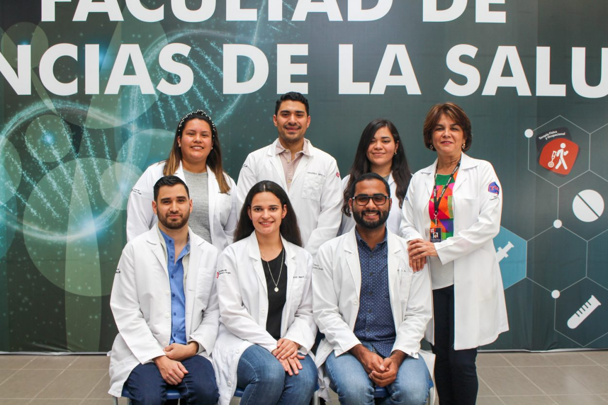
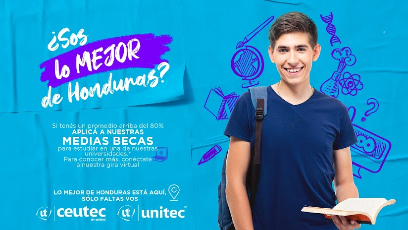
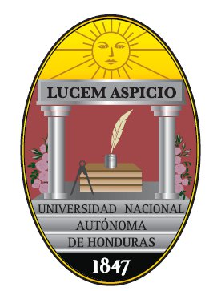
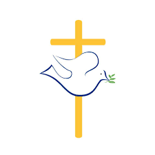
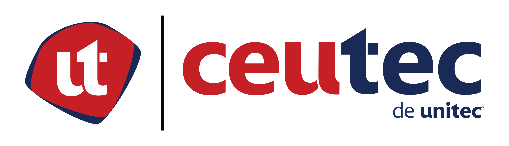
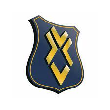

Oferta academica de UNITEC
Su oferta académica se centra en las áreas de negocios e ingenierías, con 27 carreras de pregrado y 14 programas de maestría. Todas ellas de carácter presencial. También se ofrecen los programas de maestría en línea, los cuales se fundamentan en el modelo de educación e-learning que responde a las necesidades de profesionales con interés de capacitarse pero que por sus exigencias laborales o su situación geográfica se hace imposible que puedan asistir regularmente a un centro educativo. Los programas de Dirección Empresarial y Administración de Proyectos se ofrecen a través del Aula Virtual que opera en la Plataforma Moodle y cuentan con el respaldo de más de 20 años de experiencia en programas en línea de la Red Laureate International Universities.
UNITEC cuenta con diversos programas, que ayudan a su población estudiantil en la adquisición de experiencia laboral y como una herramienta de ayuda para los estudiantes que tengan la necesidad de pagar una parte de sus estudios. PROGRAMA UNIDOS es un programa que ofrece a estudiantes de UNITEC tanto de Tegucigalpa como de San Pedro Sula, laborar por medio tiempo dentro de instituciones como Corporación Flores, bancos privados, etc. Básicamente Programa Unidos es un convenio entre UNITEC y varias empresas que contratan estudiantes para que colaboren en sus instalaciones, UNITEC recibe una media beca de L. 4,000 por cada estudiante contratado, dicha cantidad recibida por UNITEC es para el pago de la mitad de las clases de los estudiantes que colaboren con Programa Unidos.
 Ingenierias
Mecatronica
La Mecatrónica es la rama de la ingeniería que une la mecánica, electrónica, informática, el control y la automatización de los procesos industriales. Esto permite resolver y brindar soluciones a los problemas tecnológicos que actualmente presenta la industria nacional e internacional.
Sistemas
La carrera de Ingeniería en Sistemas Computacionales suple al mercado con profesionales que cuentan con las competencias y conocimientos necesarios para desarrollar tecnología de información de vanguardia, para brindar soluciones tecnológicas sustentables a las organizaciones en la nueva y dinámica sociedad de la era digital.
Civil
El egresado de Ingeniería Civil es un profesional emprendedor, con enfoque local y global, capacitado en áreas de construcción civil tales como ingeniería estructural, ingeniería hidráulica, ingeniería sanitaria, ingeniería geotécnica, ingeniería vial y administración de proyectos, El profesional es capaz de desenvolverse.
Licenciaturas
Diseño Grafico
El Licenciado en Diseño Gráfico de UNITEC reúne las competencias necesarias para crear y diseñar estrategias eficaces e innovadoras, orientadas a satisfacer las necesidades y demandas de las empresas e instituciones nacionales e internacionales en diversos ámbitos como el Diseño Corporativo.
Psicologia
El egresado de la carrera de Psicología estará preparado profesionalmente para actuar en áreas o ámbitos como ser: psicología clínica, psicología de las organizaciones y los recursos humanos, psicología educativa, social y comunitaria.lo que busca es formar profesionistas no solo a nivel teórico, sino también práctico.
Derecho
Como egresado de esta carrera serás un abogado con conocimientos en las diferentes ramas del derecho, con un enfoque interdisciplinario en áreas como derecho empresarial, comercial internacional, económico, laboral, penal, administrativo, procesal y en métodos alternos de solución de conflictos como ser la conciliación.
Otras Universidades

UNAH
UNIVERSIDAD NACIONAL AUTONOMA DE HONDURAS

UNICAH
UNIVERSIDAD CATOLICA DE HONDURAS

USAP
UNIVERSIDAD DE SAN PEDRO SULA

CEUTEC
CENTRO UNIVERSITARIO TECNOLOGICO

UJCV
UNIVERSIDAD JOSE CECILIO DEL VALLE
UTH
UNIVERSIDAD TECNOLOGICA DE HONDURAS